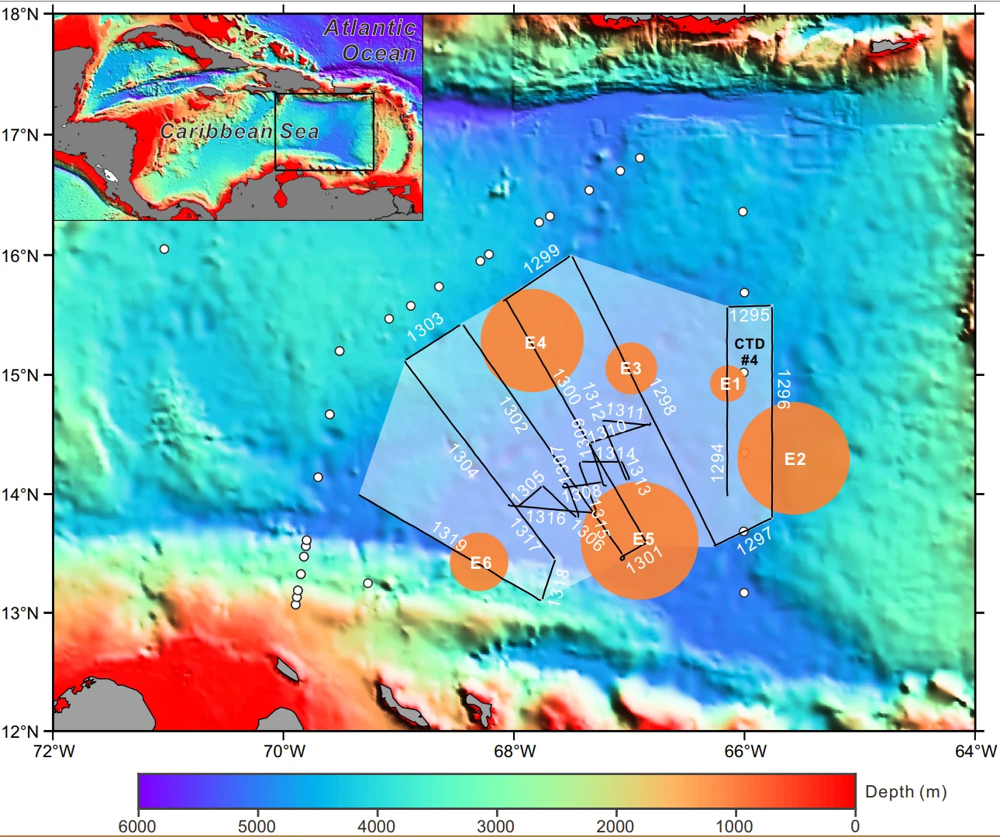
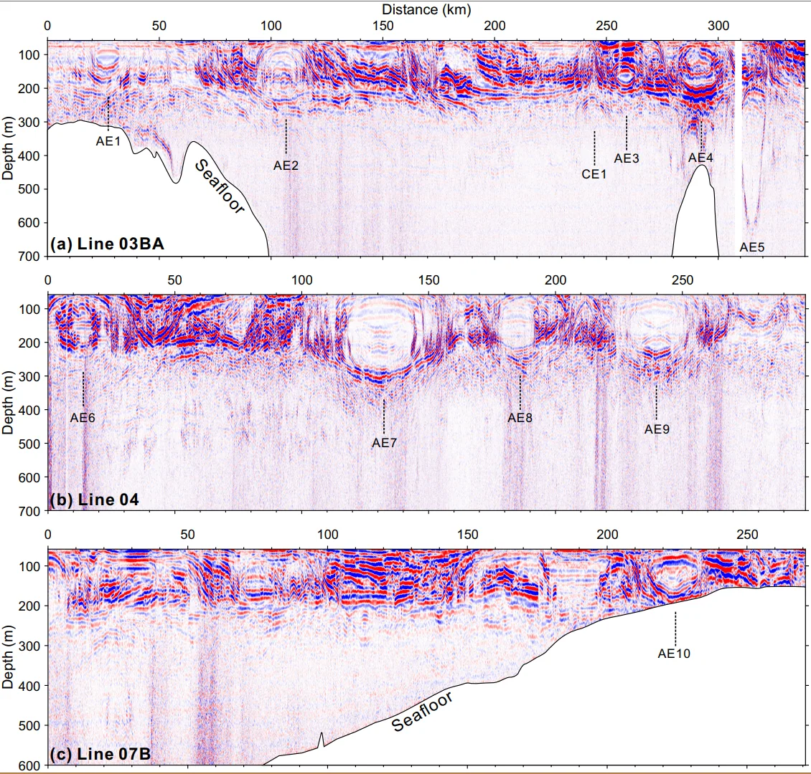
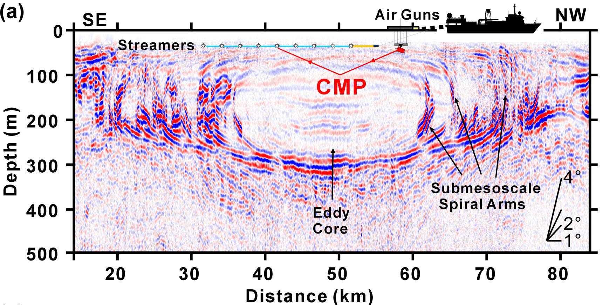

Sep 2019 - May 2025
Personal Academic Homepage
Shun Yang
Ph.D. | Engineer
- Seismic Oceanography
- Marine Geophysics
- Mesoscale Eddies
- Ocean Mixing
I study oceanic fine structures and dynamical processes using multichannel seismic reflection data, hydrographic observations, satellite altimetry, and ocean reanalysis products.
Education
Bachelor of Engineering in Exploration Geophysics
China University of GeosciencesWuhan, China
Field of study: Exploration Geophysics.
Sep 2015 - Jun 2019
Research Focus
My work connects seismic imaging with physical oceanography to resolve fine-scale ocean structures and their role in mixing and energy transfer.
Seismic Oceanography
Using multichannel seismic reflection data to image thermohaline structures and dynamical processes with high lateral resolution.
Mesoscale Eddies
Investigating the structure, evolution, and mixing signatures of mesoscale and subsurface eddies in the ocean interior.
Thermohaline Fine Structure
Studying staircases, intrusions, fronts, and layered water-mass boundaries revealed by seismic and hydrographic observations.
Ocean Mixing
Estimating diapycnal mixing and energy transfer using seismic slope spectra, hydrographic constraints, and turbulence parameterizations.
15
Published journal articles
5
First-author journal papers
6
Awards and honors
3
Main research regions
Selected Publications
Representative first-author studies on thermohaline staircases, Arctic mesoscale eddies, submesoscale structures, and seismic oceanography.

Disruptions in thermohaline staircases caused by subsurface mesoscale eddies in the eastern Caribbean Sea
Communications Earth & Environment, 2024.

Enhanced mixing at the edges of mesoscale eddies observed from high-resolution seismic data in the western Arctic Ocean
Journal of Geophysical Research: Oceans, 2023.

A mesoscale eddy with submesoscale spiral bands observed from seismic reflection sections in the Northwind Basin, Arctic Ocean
Journal of Geophysical Research: Oceans, 2022.